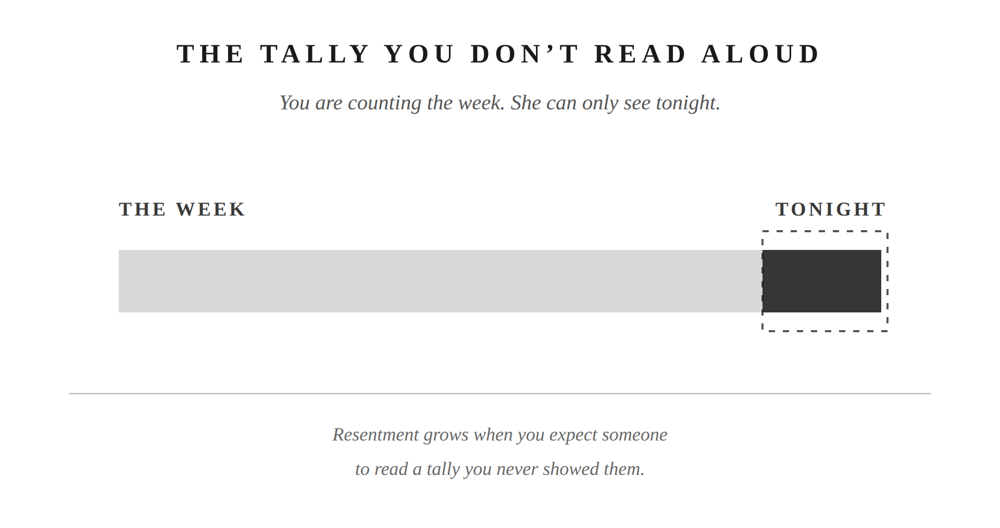

You take out the trash every Tuesday night. You’ve done it for years. Nobody thanks you for it, and you don’t expect them to. It’s just your job, the way folding the towels a certain way is your wife’s job, or driving the kids to practice is yours. Most of what holds a marriage together runs on this kind of quiet, unthanked work. So why does one offhand comment, on an ordinary night, undo three years of doing it without complaint?
Every household splits its work. Sometimes you sit down and divide it on purpose. Most of the time it just happens, one Tuesday at a time, until the dog walks belong to you and the dishes belong to her and nobody remembers deciding any of it.
Here’s the part nobody warns you about: once the split happens, you mostly stop seeing her half of it. Not because you don’t care. Because you’re the one living your half. You feel every trip to the dump, every late night with the dishes, every weekend project nobody else watched you start or finish. You don’t feel her half nearly as much, because you weren’t standing in it. She’s the hero of her own story the same way you’re the hero of yours. The work she sees clearly is her own.
Some of what you carry has a name and a schedule. Trash on Tuesday. Dishes most nights. But a lot of it doesn’t have either. It’s a bucket. One weekend it’s the ceiling fan that’s been rattling for a month. Another weekend it’s helping her finish a project she’s been planning for weeks. Another it’s gassing up both cars and running them through the wash, or coaching the flag football team because nobody else would. None of those jobs repeats often enough to earn a name, so it just lives in the bucket labeled “whatever needs doing.” That bucket is exactly why this blindness gets worse the longer a marriage runs. There’s no slot on the calendar that says “ceiling fan.” There’s no moment where either of you notices it got emptied again.
This isn’t a flaw in your marriage. It’s just how two people work. The philosopher Musonius Rufus called marriage a “community of life.” He’s a Stoic teacher most men have never heard of, even if they know Marcus Aurelius or Seneca. His idea was simple: two people running one shared project, not two private ones. That’s the goal: one household, not two ledgers each of you keeps to yourself. But goals don’t erase how human attention actually works. You still only live inside one half of the house.
But there’s a catch. You don’t need her to thank you for the trash. That’s the whole point of doing it without resentment: it’s your job, not a favor you’re owed credit for.
The absence of thanks isn’t neutral, though. It just sits there, quiet, until the day it isn’t quiet anymore. When nobody’s saying thank you, the only thing left to fill that silence is criticism. You don’t need gratitude to do your job well. You do need something other than constant correction, or the job starts to feel less like duty and more like being used.
And when that correction comes, it rarely comes from malice. It comes from someone just as blind to your half of the work as you are to hers. She’s not building a case against you. She’s tired. She’s overloaded. The only thing in front of her right now is a sink full of dishes and a husband who isn’t in it. Overload looks for an outlet. Tonight, you’re standing closest to it.
Resentment almost never fires on the real math. It fires on what’s visible right now, in the room, tonight.
Say you like to unwind at night. TV on, feet up, day done. She likes to fold laundry in the evening, basket on the couch, towels into stacks. Most nights that’s just two people doing two different things in the same room. But some nights she’ll say it: “I’m working all the time, and you aren’t.” And for a second, every trash bag you’ve hauled and every weekend you spent emptying that bucket disappears. None of that is in this room right now. What’s in this room is one person sitting and one person folding.
It isn’t really about the laundry. The total weight either of you carries that week has almost nothing to do with what fires in that moment. It’s the visible difference, her hands moving, yours still, that turns an ordinary Tuesday into a verdict.
When that verdict lands, you’ve got four ways to swing back, and you already know all four, because you’ve used them before you ever heard them named.
You can defend yourself: list everything you did this week, out loud, like a man reading a closing argument. You can deny it: “That’s not true, I do plenty.” You can downplay it: “It’s not that bad, calm down.” You can deflect it onto her: “You’re not exactly perfect either.” Each one feels justified the second you reach for it. Each one also turns a tired woman’s comment about laundry into a trial over your character, and that’s a fight nobody wins, because now you’re both defending instead of either of you listening.
The moment you produce a defense, you’ve handed her a reason to produce one back. Nobody loses an argument like that without reaching for their own evidence. So now there are two ledgers in the room instead of one shared project, and ledgers don’t reconcile. They just get longer, week after week, until neither of you can remember what actually started the fight. That’s how one comment about laundry turns into a referendum on a parent-teacher conference from three months ago. You didn’t invent scorekeeping by accident. You invented it the moment you decided your tally was worth reciting out loud.
The stronger play costs more in the moment and pays more later. Notice what she’s actually doing. Say so. Then make the play instead of defending: “I see you’re working. I appreciate it. You want to sit down, or should I help first?” That single sentence does what no defense ever could. It lets you help each other instead of arguing about who did more.
Some nights the sting still lingers, even after you’ve said the right thing. That’s when the question is worth asking yourself honestly: am I actually being lazy right now, or are we just out of rhythm?
Marcus Aurelius asked himself a version of this every morning he didn’t want to get out of bed. You weren’t born to stay under the covers, he told himself. Everybody has to go about doing their job. He wasn’t talking about ambition. He was talking about the plain fact that a man does his work the way a horse runs or a bee makes honey. Neither one needs applause for it.
If the honest answer is yes, you were avoiding your own job. That’s not an attack to defend against. That’s a gift, and you take it. If the answer is no, you weren’t lazy. You were just out of step for one evening. Give her the same grace you’d want on a night when you’re the one folding towels and she’s the one with her feet up. Either way, the tally never gets read out loud.
That’s the whole difference between a man who carries his half of the house and a man who’s quietly billing for it. One of them is steady enough to be counted on without needing to be counted. Resentment comes from scorekeeping. Chapter 7 examines the ledger directly.

Putting into Practice
Mechanism: The Tally You Don’t Read Aloud
Conversation sentence: Resentment doesn’t come from doing too much. It comes from being the only one who can see it.
Every marriage splits its duties, by intention or by drift, and each spouse mostly sees their own half of the work, not the other’s, each one the hero of their own story. Resentment doesn’t fire on the real workload; it fires on a visible moment, one person resting while the other is visibly working, and criticism in that moment lands as a verdict rather than a complaint. The Four D’s (Defend, Deny, Downplay, Deflect) feel justified but are the literal mechanism by which scorekeeping gets invented: the moment you recite your own tally out loud, you’ve handed her a reason to keep one too. The corrective is noticing what she’s doing, naming it, and closing the gap instead of defending it. It’s backed by a self-check borrowed from Marcus Aurelius: am I actually being lazy right now, or are we just out of rhythm?
Lesson: Musonius Rufus on duty freely chosen: obligation performed for its own sake doesn’t accumulate into debt. Performed for credit, it always does. The resentment lives in the intention, not the act.
Challenge: It’s easy to feel shortchanged the moment you’re sitting and she’s visibly working, even in a week where you emptied the bucket of unnamed jobs nobody keeps score of. What’s visible right now isn’t the same as what’s actually true.